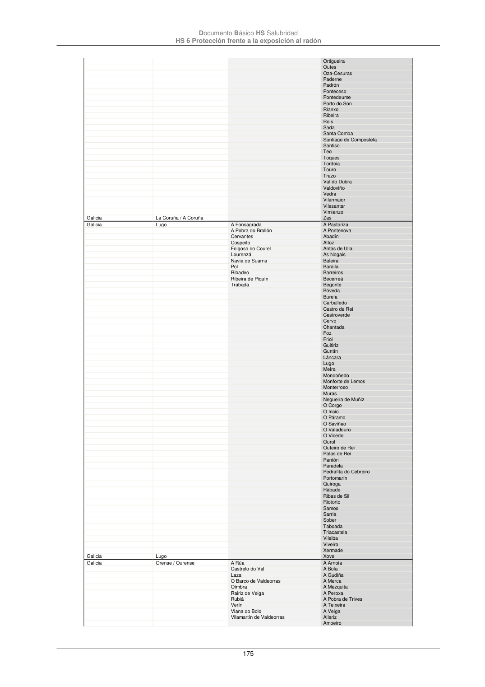

DB-HS Salubridad · edición 2022-06-14 · capa oficial
Documento DB-HS-oficial · SHA-256 del PDF 68df3caacc95f71aee2ec1ba7b2c65ae66155c21e3a8785521b8fdd4fd640d3b
Página física 175 de 184.
Copia fiel del PDF fuente · Fuente oficial
Ficha de la disposición en la fuente oficial
Formato: Texto de la página (Markdown)
Documento Básico HS Salubridad HS 6 Protección frente a la exposición al radón 175 Ortigueira Outes Oza-Cesuras Paderne Padrón Ponteceso Pontedeume Porto do Son Rianxo Ribeira Rois Sada Santa Comba Santiago de Compostela Santiso Teo Toques Tordoia Touro Trazo Val do Dubra Valdoviño Vedra Vilarmaior Vilasantar Vimianzo Galicia La Coruña / A Coruña Zas Galicia Lugo A Fonsagrada A Pastoriza A Pobra do Brollón A Pontenova Cervantes Abadín Cospeito Alfoz Folgoso do Courel Antas de Ulla Lourenzá As Nogais Navia de Suarna Baleira Pol Baralla Ribadeo Barreiros Ribeira de Piquín Becerreá Trabada Begonte Bóveda Burela Carballedo Castro de Rei Castroverde Cervo Chantada Foz Friol Guitiriz Guntín Láncara Lugo Meira Mondoñedo Monforte de Lemos Monterroso Muras Negueira de Muñiz O Corgo O Incio O Páramo O Saviñao O Valadouro O Vicedo Ourol Outeiro de Rei Palas de Rei Pantón Paradela Pedrafita do Cebreiro Portomarín Quiroga Rábade Ribas de Sil Riotorto Samos Sarria Sober Taboada Triacastela Vilalba Viveiro Xermade Galicia Lugo Xove Galicia Orense / Ourense A Rúa A Arnoia Castrelo do Val A Bola Laza A Gudiña O Barco de Valdeorras A Merca Oímbra A Mezquita Rairiz de Veiga A Peroxa Rubiá A Pobra de Trives Verín A Teixeira Viana do Bolo A Veiga Vilamartín de Valdeorras Allariz Amoeiro

Datos candidatos: compruebe celdas y notas en el PDF.